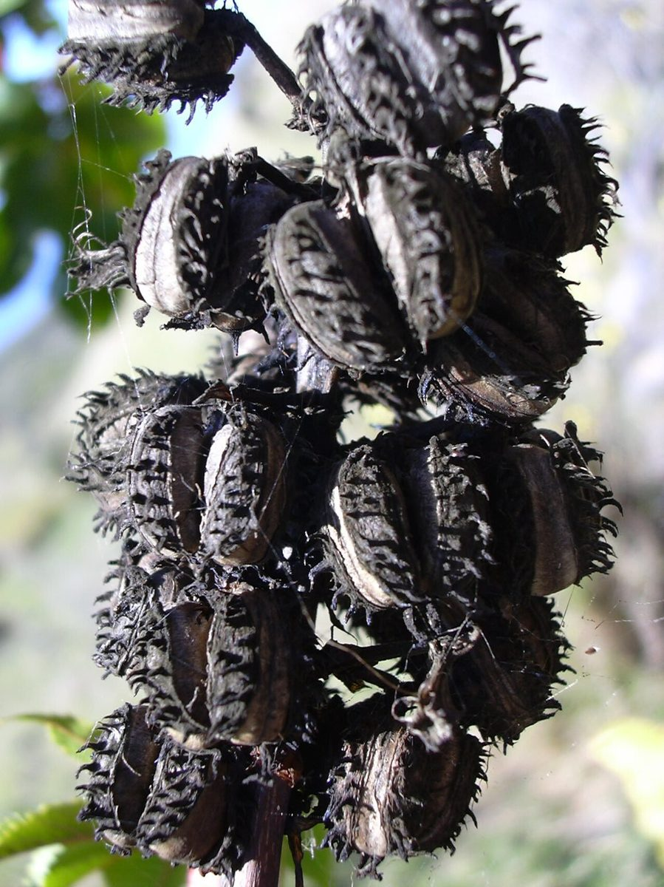
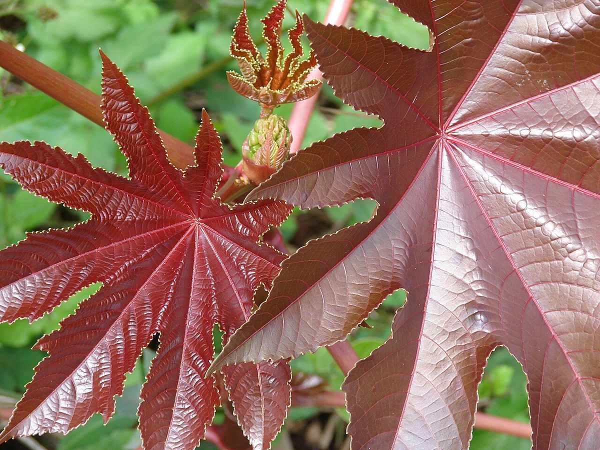

RARE & EXOTIC Beach strand Valley mouth Sea cliff Riparian
Ricinus communis
pāʻaila, koli · castor bean, castor oil plant



Quick facts
| Family | Euphorbiaceae |
|---|---|
| Scientific name | Ricinus communis |
| Hawaiian name(s) | pāʻaila, koli |
| English name(s) | castor bean, castor oil plant |
| Status | Invasive |
| Conservation | — |
| Coastal zones | Beach strand Valley mouth Sea cliff Riparian |
| Occurrence | Naturalized on disturbed dry-to-mesic coastal ground throughout Kauaʻi's leeward and southern coasts. Common in valley mouths of the Nā Pali–Kona strand, on roadside berms and stream banks, and on eroded slopes below the sea cliffs. Individual plants grow fast and are often the first tall herb to colonize bare disturbed ground. |
Hazards: DANGER: The seeds contain ricin, one of the most acutely toxic natural compounds known — a very small amount can be lethal to humans if the seed is chewed and swallowed. Do NOT put any part of the plant, especially the mottled seeds, in your mouth. Keep children and dogs away from ripe capsules. Handling intact capsules is not dangerous, but do not crack, chew, or ingest seeds; wash hands after touching broken seeds. The sap can also cause contact dermatitis in sensitive people.
How to identify
- Growth form
- Fast-growing herbaceous shrub, 1–4 m tall (occasionally to 5 m in good conditions). Erect and open, with a single main stem branching above; often reddish-tinged. Not woody except at the base.
- Size
- 1–4 (5) m tall.
- Leaves
- Very large — palmately lobed, typically 15–45 cm across, with 5–11 pointed, coarsely toothed lobes radiating from a central point where the long leaf stalk (petiole) attaches (peltate insertion). Deep green or, in some varieties, bronze to red-purple.
- Flowers
- Small, greenish-yellow to reddish, borne in dense upright branched clusters at the tops of stems. Male flowers below, female flowers (with feathery red stigmas) above on the same cluster — unusual and diagnostic when seen up close.
- Fruit / seed
- Round to ovoid capsules 1.5–2.5 cm across, covered in soft spines and usually bright red or reddish-green when developing. Each capsule holds three glossy, mottled, bean-like seeds.
- Bark / stem
- Stems smooth, hollow, often waxy blue-green or reddish; woody only at the base of older plants.
- Where it sits on the coast
- Disturbed ground from sea level upward; especially common on drier leeward coasts and in valley mouths. Not a plant of undisturbed native vegetation.
Clinchers (features that lock the ID)
- Huge palmate leaves (5–11 pointed lobes, up to 45 cm) — unmistakable at scale.
- Red-spined round seed capsules in erect clusters.
- Fast-growing tall herb-shrub habit on disturbed dry coastal ground.
Look-alikes
- Manihot esculenta (cassava, occasional in valleys) — Cassava's leaves are also palmately lobed but the lobes are narrower and more finger-like, the plant is truly woody, and it lacks the red spiny seed capsules.
- Aleurites moluccanus (kukui, in this guide) — Kukui is a large tree, not an herb; its leaves are broadly 3–5-lobed to nearly unlobed with a pale silvery cast, unlike the deep-cut deep-green castor bean leaf.
- Jatropha species (occasional) — Jatropha leaves are shallowly lobed rather than deeply cut, and Jatropha fruits are green-yellow smooth capsules, not the spiny red castor-bean capsules.
Ecology
Native to eastern Africa; long naturalized worldwide, in Hawaiʻi since at least the 19th century. Wind- and water-dispersed seeds colonize disturbed ground rapidly. The plant does not invade closed native forest but dominates dry disturbed sites, and its dense canopy shades out low native ground cover. [1], [2], [13], [14]
Cultural significance
—